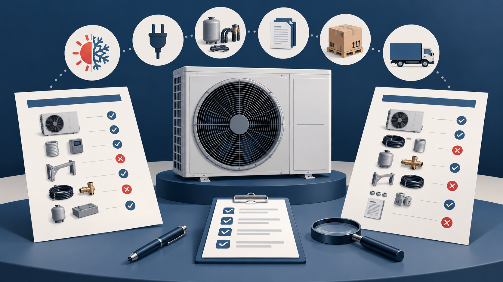

Cover illustration: AI-assisted editorial artwork. It is not a product photograph, factory record, performance test or certification evidence.
Two air-source heat pump quotations can carry similar model labels and very different commercial scope. One may include a circulation pump, controller, buffer tank connection kit and export packing. Another may quote only the outdoor unit. A lower headline price is not meaningful until both offers describe the same operating condition, equipment boundary and evidence package.
This guide is for overseas distributors, project buyers and sourcing teams comparing supplier quotations from China. It uses our current supplier-catalogue family as a practical reference, but every specification, document, MOQ and delivery term still needs confirmation for the selected model and destination market.
1. Freeze the application before requesting prices
Start with the job the equipment must perform. “20 kW heat pump” is not a complete purchasing description. A usable inquiry states whether the unit is for space heating, cooling, domestic hot water or a combined system; the target climate; water temperatures; power supply; and the design condition used for the requested output.
- Target country and installation type
- Heating, cooling and/or domestic-hot-water duty
- Required output at a stated ambient and water condition
- Voltage, phase and frequency
- Required refrigerant and any local servicing constraints
- Noise, controls, monitoring and integration requirements
The current Taotao Sourcing catalogue includes several heat-pump families, including R290 DC-inverter monobloc models presented for heating, cooling and domestic hot water. That catalogue description is a sourcing lead, not proof that a particular unit meets a project duty point.
2. Ask for the declared performance condition
A capacity number without its test or declaration condition cannot be compared responsibly. Ask each supplier to state the ambient condition, entering and leaving water temperatures, operating mode and whether the figure is nominal, maximum or part-load performance.
The European Commission's ecodesign material distinguishes product groups and declaration conditions for heat pumps. Its official FAQ also explains that parameters for low- and medium-temperature applications are not interchangeable. Buyers should use the rules applicable to their destination market and product category, and obtain qualified regulatory advice where needed.
3. Draw a line around what is included
Put the equipment boundary into the quotation. A line-by-line scope table is more useful than a long marketing description.
- Main unit and controller
- Pumps, valves, sensors, electric backup heater and connection kit
- Water tank, buffer tank or heat exchanger, if required
- Mounting feet, anti-vibration parts and condensate accessories
- Remote monitoring hardware, software access and language support
- Spare parts, service tools and commissioning support
- Inner protection, pallet or crate, outer packing and labels
If an item is optional, record the option price and compatibility instead of leaving it implied. This makes later supplier changes visible.
4. Separate product documents from sales claims
Request the document set by exact model and destination market. Depending on the project, that may include a technical data sheet, wiring and hydraulic diagrams, installation manual, component list, label information, declaration or test documents, and a spare-parts schedule. Document requirements are not identical across markets.
Do not treat a generic certificate image, family brochure or verbal statement as confirmation for the selected configuration. Record the legal entity named on each document and check whether the quoted manufacturer, exporter, contracting party and payee are aligned or clearly explained.
5. Make the sample and pre-shipment check answer different questions
A sample can help confirm the physical configuration, controls, documentation and packing reference. It does not by itself prove a production lot or establish compliance. Before shipment, compare selected units with the approved configuration and record any disclosed changes.
- Give the sample a model and revision reference.
- Photograph included accessories, labels, connectors and packing.
- Record open technical questions instead of silently accepting them.
- Require written notice before changes to components, controls, refrigerant, factory, documents or packing.
- Define which checks are visual, functional or document-based and which require an independent laboratory or qualified engineer.
6. Read quotation gaps as questions, not verdicts
My banking and manufacturing-business analysis background makes me cautious when a quotation depends on broad descriptions, unusually narrow inclusions or entities that do not line up. These are prompts for clarification, not proof that a supplier is unsafe or financially weak. The practical response is to request evidence, normalize the scope and document the explanation before a deposit decision.
Build a comparable inquiry file
For a buyer-side sourcing review, send the application, target market, design condition, preferred model family, quantity estimate and the quotations you are allowed to share. Redact bank details, personal data and confidential customer information. Taotao Sourcing can help organize the comparison, identify open evidence points and define a proportionate supplier or pre-shipment check under an agreed scope.
Related product and service pages
- Air-Source Heat Pump Catalogue
- R290-20kW catalogue reference
- Supplier Verification
- Inspection & QC
- Start a heat pump sourcing inquiry
Official references
- European Commission — Air Heating and Cooling Products
- European Commission — Ecodesign/Energy Labelling Review for Air Heating and Cooling Products
- European Commission — Heat-pump application and declaration-condition FAQ